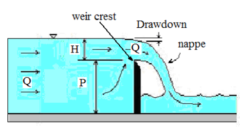
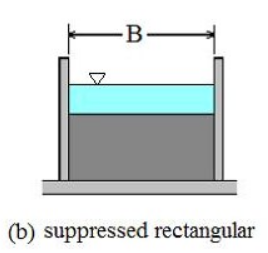
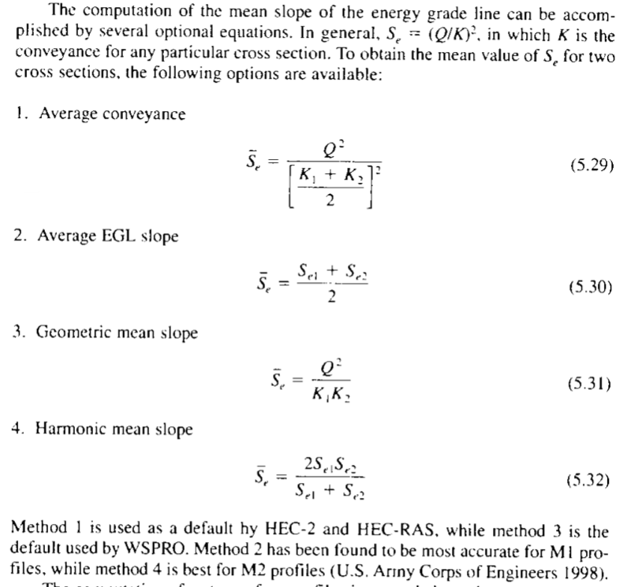
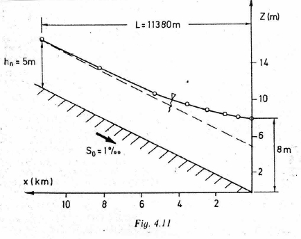
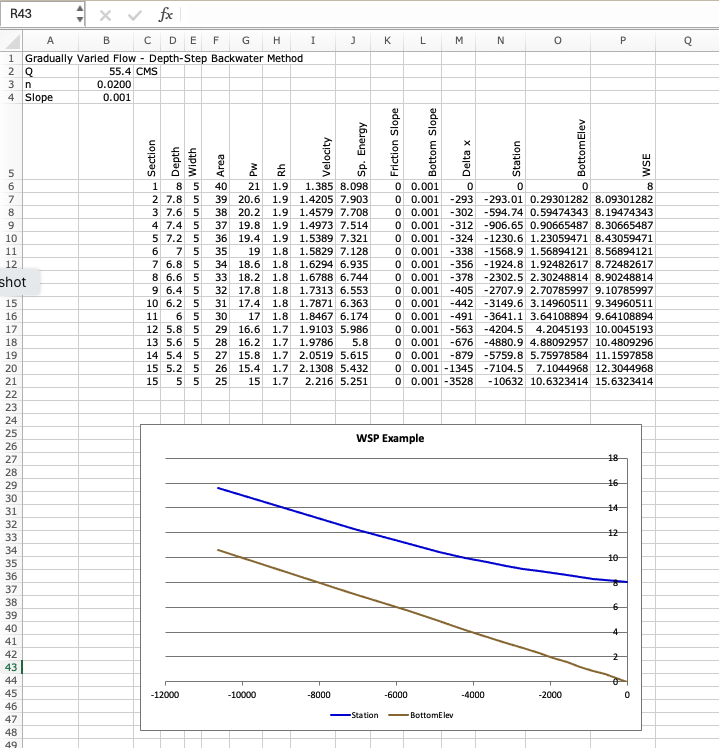
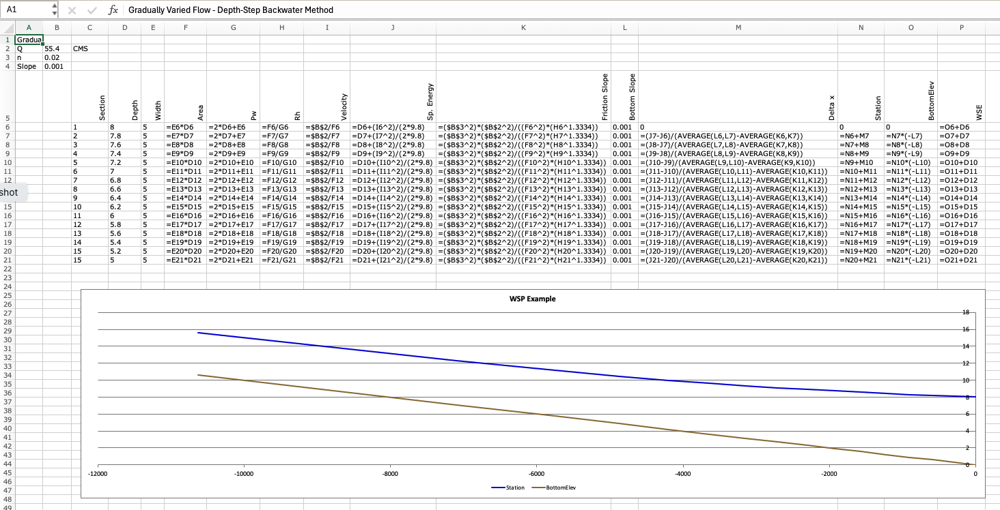

Lab 7. - Water Surface Profiles: Backwater Curves#
Course Website
References#
Koutitas, C. G. 1983. Elements of Computational Hydraulics. ISBN 0-412-00361-9. Pentech Press Ltd. London. (Chapter 4) http://54.243.252.9/ce-5362-webroot/3-Readings/PracticalComputationalHydraulics-Kousitas/ElementsOfComputationalHydraulics.pdf
Roberson, J. A., Cassidy, J.J., and Chaudry, M. H., (1988) Hydraulic Engineering, Houghton Mifflin Co (Chapter 10) http://54.243.252.9/ce-5362-webroot/3-Readings/HydraulicEngineering/
Sturm T.W (2001) Open Channel Hydraulics, 1ed., McGraw-Hill, New York. Note: This PDF is from an international edition published in Singapore. http://54.243.252.9/ce-5362-webroot/3-Readings/OpenChannelHYdraulics/
Cunge, J.A., Holly, F.M., Verwey, A. (1980). Practical Aspects of Computational River Hydraulics. Pittman Publishing Inc. , Boston, MA. pp. 7-50
Videos#
Purpose:#
The purpose of Laboratory 81 is for students to compare a computed water surface profile to an experimental profile and confirm or refute the ability of computational hydraulics to predict behavior of real systems.
Methods:#
Using a computer and provided algorithms, create a computed water surface profile for the conditions of the laboratory flume.
The computer program will need the channel cross-section geometry (rectangular), channel discharge (\(Q\) - unknown, but measurable using principles of sharp-crested weir), the channel slope, the channel resistance term (Manning’s \(n\)).
The experimental measurements include the depth of flow over the weir crest (assumed critical depth - this is the only reliable way to estimate discharge), the channel slope, the depth of flow at stations \(-30,-60, ... ,300 cm\) marked on the channel walls.
Procedure:#
Measure the height of the weir crest. (Use DTW probe - take some care to make an accurate measurement)
Set the DTW probe to read 0 at weir crest height, with probe in middle of its up-down range. This will make later calculations easier.
Measure flume width.
The laboratory instructor will set a channel slope and a flow-rate. Once a steady condition is obtained the student(s) will
Determine channel slope by direct measurement(s); measure distance on two points on the flume to the floor, calculate the slope.
Determine channel slope from the channel slope indicator.
Measure the height of the water surface above the weir crest.
Measure the height of the water surface above the channel bottom at the 12 stations marked on the flume.
Calculate the flow rate based on the weir measurements.
Calculate the water-surface position using an appropriate tool to produce a simulated water surface profile
Plot the simulated water surface profile and the measured water surface profile on the same graph.
Adjust the value of Manning’s \(n\), until the simulated water surface profile and the measured water surface profile are as similar.
Report the “best” value of Manning’s \(n\).
Compute a metric of the modeling error.
Weir Discharge Formula#
A sketch of the elevation view at a weir is

An end view of the weir is

A simple formula to compute discharge over a suppressed sharp crested weir (in SI units) is
where,
\(Q\) is the discharge in \(m^3/sec\)
\(L\) is the weir crest width (channel width, \(B\), in this case) in \(m\)
\(H\) is the water surface height above the elevation of the weir crest in \(m\)
In the experimental apparatus, and the flow depths used, the weir is indeed a suppressed weir. Consult USBR (United States Bureau of Reclamation) (2001). Water Measurement Manual, 3rd Edition Revised Reprinted. Technical report, Water Resources Research Laboratory, US Department of the Interior (p. 317). to learn the conditions for a suppressed sharp crested weir formula to be applicable.
The water surface height approaching the weir is made at a location just upstream of where “curvature” of the free surface appears - it is a bit subjective
words |
words |
words |
words |
words |
wprds |
|---|---|---|---|---|---|
number |
\(P\) = weir crest height (m) ______
\(L\) = weir crest width (m) ______
\(S_0\) = channel slope (\(\%\)) ______
STATION_ID |
x-coordinate (m) |
depth-to-water (mm) |
water depth (DTW + WH) |
words |
wprds |
|---|---|---|---|---|---|
0 : ~ weir |
0.00 |
||||
1 |
-0.30 |
||||
2 |
-0.60 |
||||
3 |
-0.90 |
||||
4 |
-1.20 |
||||
5 |
-1.50 |
||||
6 |
-1.80 |
||||
7 |
-2.10 |
||||
8 |
-2.40 |
||||
9 |
-2.70 |
||||
10 |
-3.00 |
||||
11 |
-3.30 |
||||
12 : ~ head tank |
-3.60 |
Deliverables#
Calculations to estimate flow over a sharp crested weir (spreadsheet, Jupyter Notebook, or by-hand calculations)
Data tables populated with measurements
The computer script (code) used; if a spreadsheet is used, be sure to turn on “display equations” mode, so the actual code shows, not just tabl;es of values.
The plot of the simulated water surface profile and the measured water surface profile on the same graph.
Background: Computation of Water Surface Profiles#
Two types of methods
Explicit or direct step method: distance is determined for a specified depth change
Mostly for prismatic channels where cross-sectional properties don’t change with distance x.
Implicit methods: depth is computed from distance changes
Unknown appears on both sides of the equation dy = f(y)dx
For natural channels for which cross-sectional properties are determined beforehand at particular locations.
Important Assumptions Slope of the energy grade line, \(S_f\), can be evaluated from Manning’s or Chezy’s equation using the local value of depth.
In either method class, there is a slope averaging component to approximate the energy slope at a section especially impotent in natural channels described in our textbook on pg 185


In the scripts in this JupyterBook, the average conveyence is used in the direct step and fixed space step method examples.
Note
In the examples the goal is to illustrate the computational methods employed, averaging the conveyence is just a bit easier programming (not by much). Readers can obviously reverse engineer the scripts and satisfy their own needs.
Background: Depth-Step Backwater Method#
The direct step method computes distances from changes in flow depths. This is the method you may have learned in CE 3305 Engineering Fluid Mechanics.
The depth-step refers to fixed changes in depth for which we solve to find the variable spatial steps. The method is a very simple method for computing water surface profiles in prismatic channels. A prismatic channel is a channel of uniform cross sectional geometry with constant bed (topographic) slope.
Note
The textbook calls this the Direct Step Method
In such channels with smooth (non-jump) steady flow the continunity and momentum equations are:
Continunity
where
\(Q\) is volumetric discharge,
\(A\) is cross sectional flow area, and
\(V\) is the mean section velocity.
Momentum
where \(y\) is the flow depth (above the bottom), and \(x\) is horizontal the distance along the channel.
For the depth-step method, the momentum equation is rewritten as a difference equation (after application of calculus to gather terms) then rearranged to solve for the spatial step dimension
where \(\bar S\) is the average slope of the energy grade line between two sections (along a reach of length \(\Delta x\), the unknown value).
Rearrangement to isolate \(\Delta x\) produces an explicit update equation that can be evaluated to find the different values of \(\Delta x\) associated with different flow depths. The plot of the accumulated spatial changes versus the sum of the flow depth and bottom elevation is the water surface profile.
The distance between two sections with known discharges is computed using the equation, all the terms on the left hand side are known values. The mean energy gradient (\(\bar S_f\) ) is computed from the mean of the velocity, depth, area, and hydraulic radius for the two sections.
The friction slope can be computed using Manning’s, Chezy, or the Darcy-Weisbach friction equations adapted for non-circular, free-surface conduits.
Example 1A#
The figure below is a backwater curve for a rectangular channel with discharge over a weir (on the right hand side — not depicted).The channel width is 5 meters, bottom slope 0.001, Manning’s n = 0.02 and discharge Q = 55.4m\(^3\).

Note
The figure is from: Page 85. Koutitas, C.G. (1983). Elements of Computational Hydraulics. Pentech Press, London 138p. ISBN 0-7273-0503-4
The goal is to replicate the fugure using computational thinking (ENGR 1330) methods. The depth-step method already described is an algorithm, we have to simply determine the direction to integrate - supply known depths at a control section and the target depth (normal) for the algorithm, and let the computer do the heavy lifting.
In this example, it is simple enough to create an Excel Spreadsheet as depicted below

For complete documentation, include a “Show Formulas” version like

Our plot and computed location to normal depth is for all purposes the same as the original document.
A copy of the spreadsheet is located at GVF-SS-RECTANGLE-EXAMPLE.xls
Background: Spatial-Step Backwater Method#
This method is used in most practical GVF solvers.
This method solves sequentially for y1, y2, y3, … starting at the control section (upstream or downstream end) with known water depth y0.
Step size (\(\Delta x\)) must be small enough so that changes in water depth aren’t very large. Otherwise estimates of the friction slope and the velocity head are inaccurate
For subcritical flows, calculations start downstream.
For supercritical flows, calculations start upstream.
Note
The fixed-depth change, variable-space result above is a useful tool, but not terribly practical because we mostly perform engineering hydraulics calculations to estimate values (depth, pressure, force) at prescribed locations in space, so we need another approach to the problem where we can prescribe the spatial locations, and solve for the depths.
Analysis and Script#
First the gradually varied flow equation is rearranged for relating the change in specific energy between two section to the spatial difference and the slope differences as
The computation of \(h_{i+1},V_{i+1}\) from \(h_i,V_i\) is performed by iteration. An initial value for \(h_{i+1}\) that is known to be too large is used in the above Equation along with the known value of \(h_i\) to compute a trial value \(h_{s(i+1)}\).
Then the trial value is used in the right hand side of the Equation
The two trial values are compared and the next value of \(h_{i+1}\) is computed by sucessively decreasing until the two values computed by the difference equation and the definition of specific energy coincide. Performing these calculations in a spreadsheet is complex, because the spreadsheet has to interate internally before moving to the next row (assuming flow is organized top to bottom).
Far easier is to use our ENGR 1330 scripting skills, as in the the example below that uses a method from Hamming to make the comparisons and adjust the guesses until they are sufficiently close enough.
Example 1B#
The figure below is a backwater curve for a rectangular channel with discharge over a weir (on the right hand side — not depicted).The channel width is 5 meters, bottom slope 0.001, Manning’s n = 0.02 and discharge Q = 55.4m\(^3\).
Note
The figure is from: Page 85. Koutitas, C.G. (1983). Elements of Computational Hydraulics. Pentech Press, London 138p. ISBN 0-7273-0503-4
This is the same conditions as above, except we are fixing the space locations and computing the depths.
The method employed is attributed to Hamming (cite and link to readings) that implements a Newton’s-like method to match the left and right side of the difference equation.
Here is our algorithm, first we set up some problem constants:
# Hamming's Method for Backwater Curve
imax = 15 #number of computational stations
dx = -758.0 #spacing between stations
manningsN = 0.02 #mannings n value
slopeChan = 0.001 #channel slope
normalD = 5.0 #upstream station normal depth
controlD = 8.0 #downstream station control depth
discharge = 55.4 #steady discharge
Next we define the plan view geometry, in this example we explicitly enter the values, but we could just as well read the geometry from a file to generalize the script.
topwidth = [5 for i in range(imax)]
topwidth = [float(i) for i in topwidth] # use of range() to set indices
With topwidth defined, we can compute values of velocity at the control section (downstream pool in the example). The conrtol section has position 0 in the various lists within our script. Observe the two ways we can populate the vectors with constants, use whichever you fancy!
velo = [0] * imax # allocate a velocity vector, put zeroes everywhere
velo[0] = discharge/topwidth[0]/controlD #set velocity at control section
depth = [normalD for i in range(0,imax)] # allocate a depth vector, put zeroes everywhere
spDepth = [0 for i in range(0,imax)] # allocate a sp. depth vector, put zeroes everywhere
spDepthT = [0 for i in range(0,imax)] # allocate a sp. depth vector, put zeroes everywhere
Now set control section depth, and specific energy
depth[0] = controlD # set control section depth
spDepth[0] = ((velo[0]**2)/(2.0*9.81)) + depth[0]
Now we implement the algorithm, starting from section 1 (just upstream of the control section) we use the difference equation and Hamming’s method to find a value of depth that satisfies the difference equation. Here are three loops, an outer one that processes each section and two inner loops that perform the balancing act - notice how the script breaks from a loop, when the conditions are satisfied.
## begin for loop 0
for i in range(1,imax):
depth[i] = 8.1 # set to greater than pool depth
difn = 1.0
dh = 0.00001
### begin do while loop 1
while (dh > 0.00000001):
dif = difn
ntest = 0
depth[i] = depth[i]-dh
#### begin do while loop 2
while (dh > 0):
velo[i] =discharge/topwidth[i]/depth[i]
avgDepth = 0.5*(depth[i-1]+depth[i])
avgTopW = 0.5*(topwidth[i-1]+topwidth[i])
avgV = discharge/avgTopW/avgDepth
hydR = avgDepth*avgTopW/(avgTopW+2.0*avgDepth)
sFric = (avgV**2)*(manningsN**2)/(hydR**(1.33))
spDepth[i] = spDepth[i-1]+(slopeChan-sFric)*dx
spDepthT[i] = depth[i]+(velo[i]**2/(2.0*9.81))
difn = spDepthT[i]-spDepth[i]
# update
if(ntest > 0):
dh = dh/10.0
break #break from do while loop 2
if(dif*difn > 0):
break #break from do while loop 2
depth[i] = depth[i] + dh
ntest = 1
#### end do while loop 2
### end do while loop 1
## end for loop 0
Now we prepare the output for plotting
distance = [0]*imax
bottom = [0]*imax
watersurface = [0]*imax
for i in range(1,imax):
distance[i] = distance[i-1]+dx
bottom[i] = -distance[i]*slopeChan
watersurface[i] = depth[i]+bottom[i]
watersurface[0] = depth[0]+bottom[0] # don't forget the control section!
Here we just reuse the plotting methods from prior lessons, but substitute in the correct vector names
# Now plot the water surface profile
import matplotlib.pyplot
myfigure = matplotlib.pyplot.figure(figsize = (16,8)) # generate a object from the figure class, set aspect ratio
# Built the plot
matplotlib.pyplot.plot(distance, bottom, color ='brown', linewidth=3)
matplotlib.pyplot.plot(distance, watersurface, color ='blue', linewidth=5)
matplotlib.pyplot.ylabel("Elevation (meters)")
matplotlib.pyplot.xlabel("Distance (meters)")
mytitle = "Water Surface Profile - Fixed Spatial Step Method"
matplotlib.pyplot.title(mytitle)
matplotlib.pyplot.show()